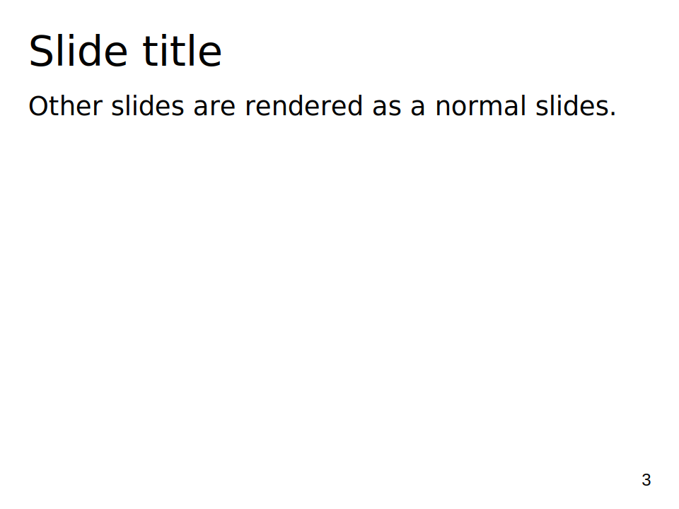
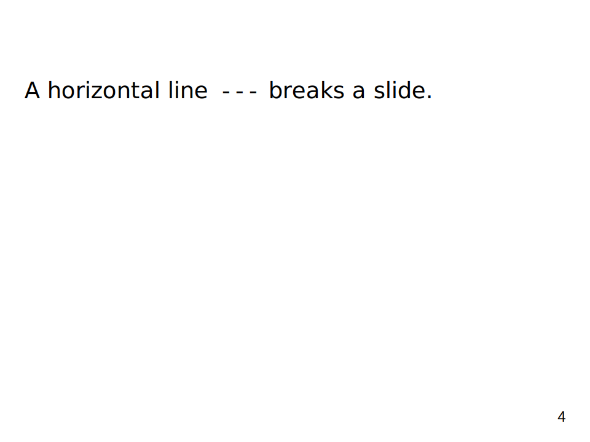
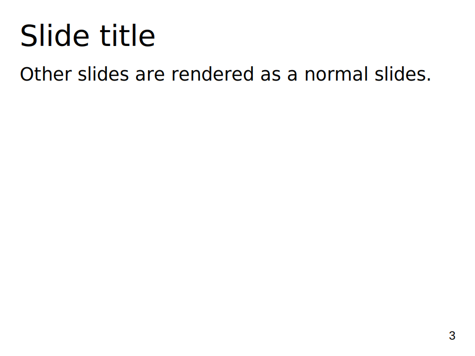
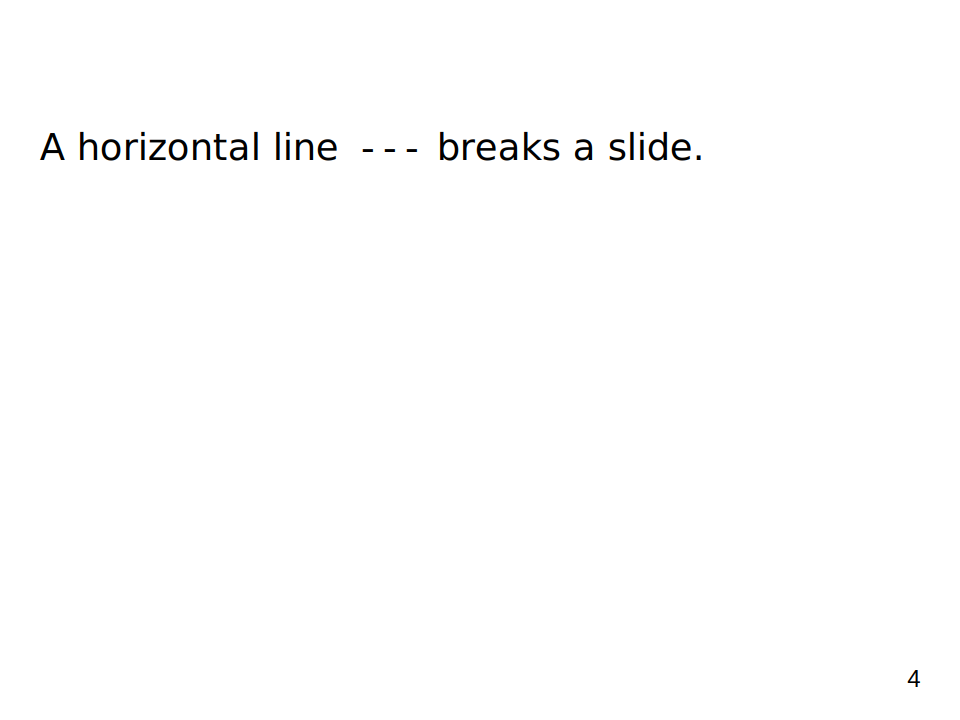

Examples
The thumbnail images are SVG files exported from PowerPoint with font adjustments. The text in the thumbnails may appear differently depending on the fonts installed on your system.
Hello!

Variables and Template file
- pageviews.md
- access_2025-01.csv.gz
- theme.pptx
-
# command plotance --template theme.pptx --arg year=2025 --arg month=01 pageviews.md
Grid Layout
Sections
  
 Charts

Text Styles
{kind=link}
Data Table
Using Plotance as a Tool
Plotance can be used as a tool for generating .pptx files in Bash/PowerShell scripts. This example generates a catalog of Azure service icons. Due to license restrictions for Azure icons, we do not provide the resulting file.
The PowerShell script Generate-AzureIconsSlides.ps1 performs the following steps:
- Downloads the ZIP archive of icons and extracts the files.
- Downloads the Plotance executable.
- Generates the Markdown file.
- Converts the Markdown file to the presentation file.
On windows, you may need to adjust the execution policy to run PowerShell scripts: